# Get tidyverse & a few other packages
# If they are not installed, uncomment and run these commands first
# install.packages("tidyverse")
# install.packages("ratdat")
# install.packages("RColorBrewer")
# install.packages("ggpmisc")
# Now load them into your environment
library(tidyverse) # Includes ggplot2
library(ratdat) # For example data, complete_old
library(RColorBrewer) # For color palettes
library(ggpmisc) # For ggplot2 extensionsData visualization with ggplot
Now lets explore the data, load it, and re-run a recent plot
?complete_old
# Add data to R environment
data(complete_old)
# Most recent plot from lesson
ggplot(data = complete_old, mapping = aes(x = plot_type, y = hindfoot_length)) +
geom_jitter(aes(color = plot_type), alpha = 0.2) +
geom_boxplot(outlier.shape = NA, fill = NA) +
theme_bw() +
theme(axis.title = element_text(size = 14),
panel.grid.major.x = element_blank(),
legend.position = "none")Warning: Removed 2733 rows containing non-finite outside the scale range
(`stat_boxplot()`).Warning: Removed 2733 rows containing missing values or values outside the scale range
(`geom_point()`).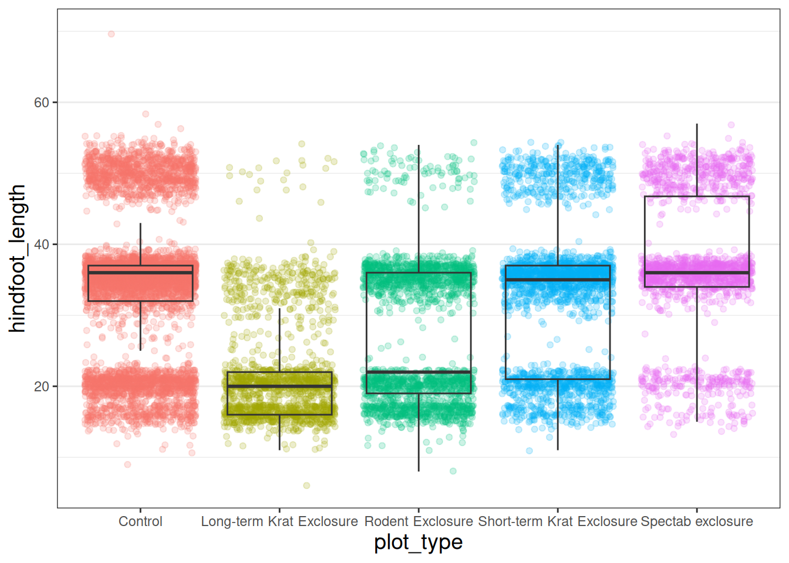
These boxplots are not ideal for describing these data The points reveal underlying patterns not accounted for by the boxplots Notice that these data contain observations from multiple species and taxa
?complete_old
unique(complete_old$taxa)[1] "Rodent" NA "Rabbit" "Bird" "Reptile"unique(complete_old$species_id) [1] "NL" "DM" "PF" "PE" "DS" "PP" "SH" "OT" "DO" "OX" "SS" "OL" "RM" "" "SA"
[16] "PM" "AH" "DX" "AB" "CB" "CM" "CQ" "RF" "PC" "PG" "PH" "PU" "CV" "UR" "UP"
[31] "ZL" "UL" "CS" "SC" "BA" "SF"Make a barplot of the total counts of each species, then rotate to the x-axis labels to make them more readable.
ggplot(data = complete_old, mapping = aes(x = species_id)) +
geom_bar(stat = "count") +
scale_y_continuous(breaks = seq(from = 0, to = 6000, by = 200)) +
theme(axis.text.x = element_text(angle = 90, vjust = 0.5))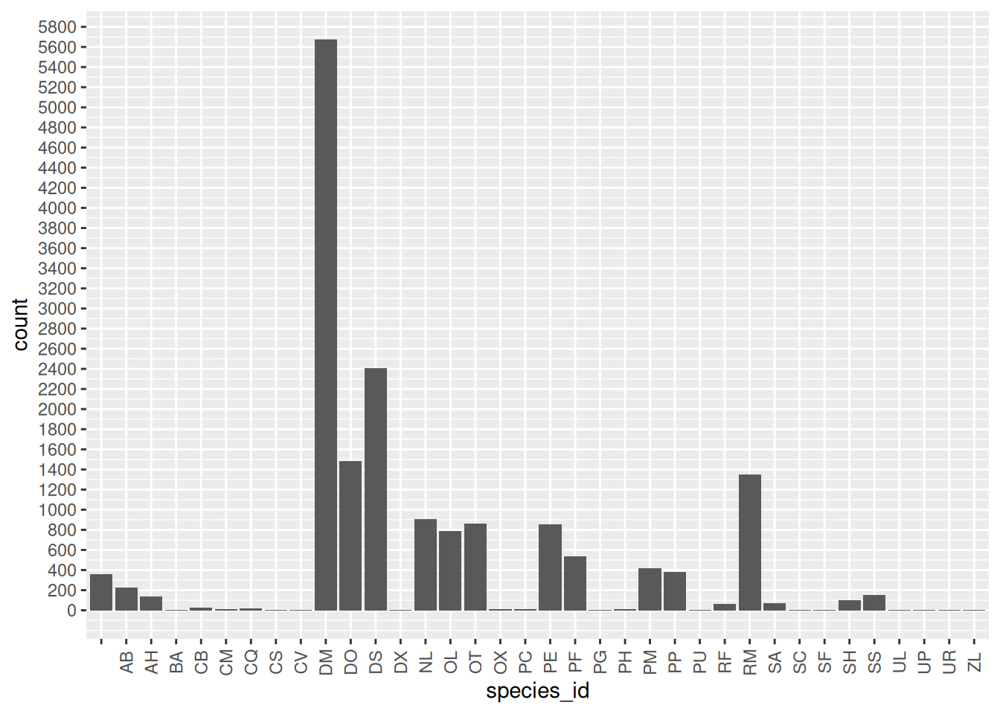
Now use the fill aesthetic to show the breakdown in counts by sex
ggplot(data = complete_old, mapping = aes(x = species_id, fill = sex)) +
geom_bar(stat = "count") +
scale_y_continuous(breaks = seq(from = 0, to = 6000, by = 200)) +
theme(axis.text.x = element_text(angle = 90, vjust = 0.5)) 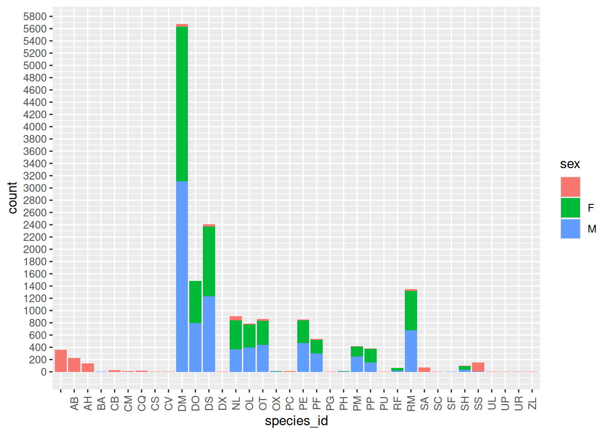
Lets choose a color palette from RColorBrewer
display.brewer.all()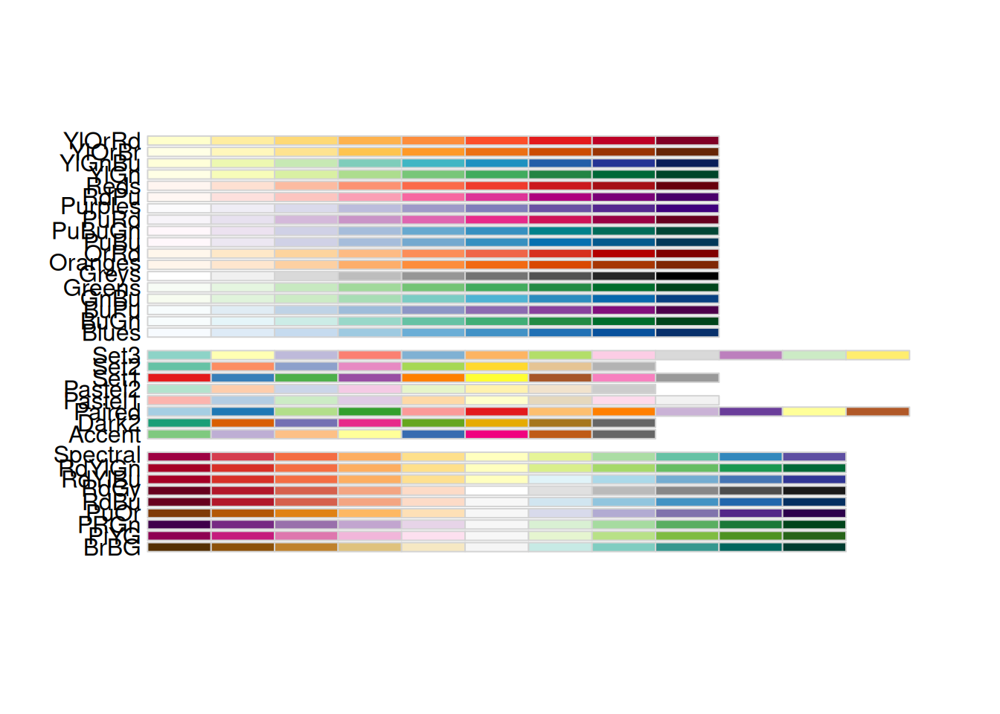
ggplot(data = complete_old, mapping = aes(x = species_id, fill = sex)) +
geom_bar(stat = "count") +
scale_y_continuous(breaks = seq(from = 0, to = 6000, by = 200)) +
theme(axis.text.x = element_text(angle = 90, vjust = 0.5)) +
scale_fill_brewer(palette = "Dark2")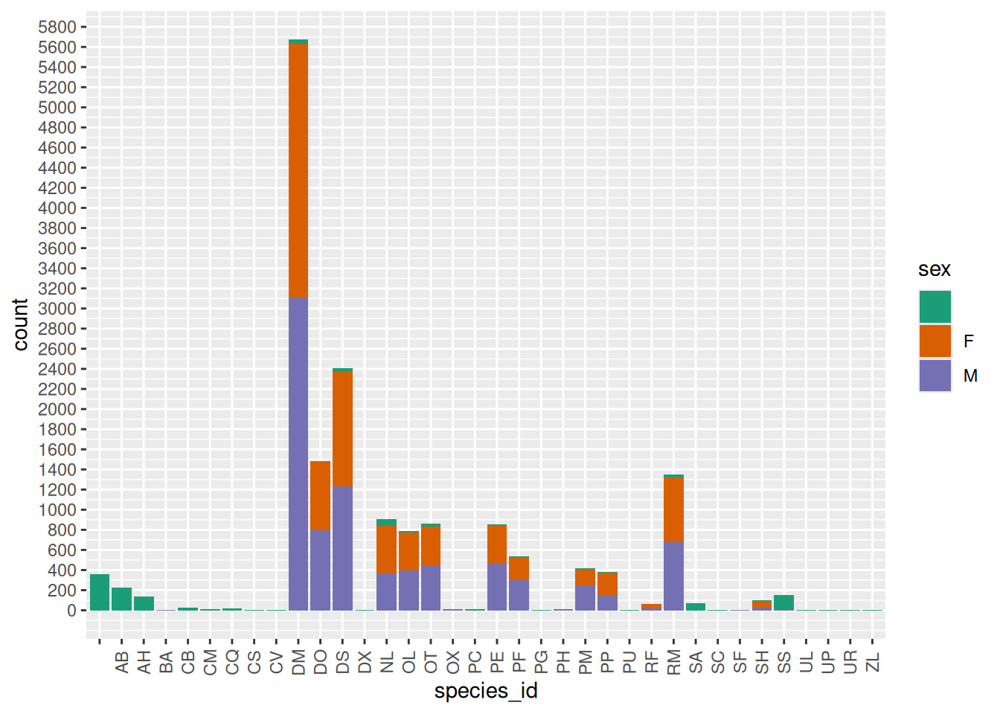
Now add a horizontal line at count = 400
ggplot(data = complete_old, mapping = aes(x = species_id, fill = sex)) +
geom_bar(stat = "count") +
scale_y_continuous(breaks = seq(from = 0, to = 6000, by = 200)) +
theme(axis.text.x = element_text(angle = 90, vjust = 0.5)) +
scale_fill_brewer(palette = "Dark2") +
geom_hline(yintercept = 400, col = "black")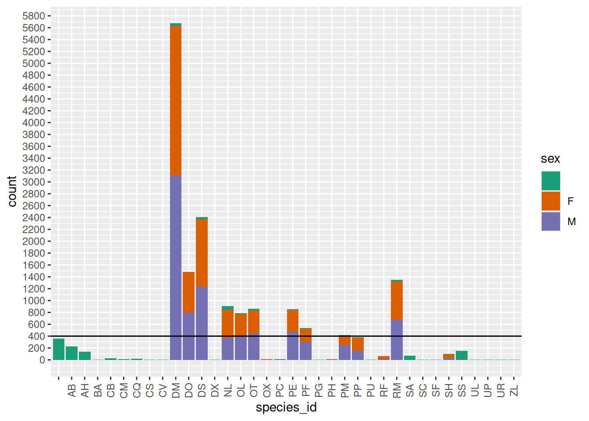
Look at only the species who occur 400 or more times
species_400 <- complete_old %>%
group_by(species_id) %>%
summarise(total_obs = n()) %>%
dplyr::filter(total_obs >= 400)Subset the data to include only the species occurring 400 or more times
species_400_data <- complete_old %>%
dplyr::filter(species_id %in% species_400$species_id)Recreate previous boxplots with jittered points, but facet by each species. Don’t suppress the outliers!
ggplot(data = species_400_data, mapping = aes(x = plot_type, y = hindfoot_length)) +
geom_jitter(aes(color = plot_type), alpha = 0.2) +
geom_boxplot(fill = NA) +
theme_bw() +
theme(axis.title = element_text(size = 14),
panel.grid.major.x = element_blank(),
legend.position = "none") +
facet_wrap(~species_id) +
scale_color_brewer(palette = "Set3")Warning: Removed 1656 rows containing non-finite outside the scale range
(`stat_boxplot()`).Warning: Removed 1656 rows containing missing values or values outside the scale range
(`geom_point()`).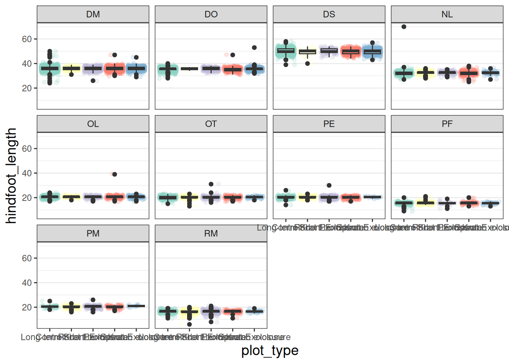
Now rotate x-axis label. Allow for different y-axis scale for each species, and extend whiskers to max and mix.
ggplot(data = species_400_data, mapping = aes(x = plot_type, y = hindfoot_length)) +
geom_jitter(aes(color = plot_type), alpha = 0.2) +
geom_boxplot(coef= NULL, fill = NA) +
theme_bw() +
theme(axis.title = element_text(size = 14),
panel.grid.major.x = element_blank(),
legend.position = "none") +
scale_color_brewer(palette = "Set3") +
theme(axis.text.x = element_text(angle = 90, vjust = 0.5, hjust = 1)) +
facet_wrap(~species_id, scales = "free_y") Warning: Removed 1656 rows containing non-finite outside the scale range
(`stat_boxplot()`).Warning: Removed 1656 rows containing missing values or values outside the scale range
(`geom_point()`).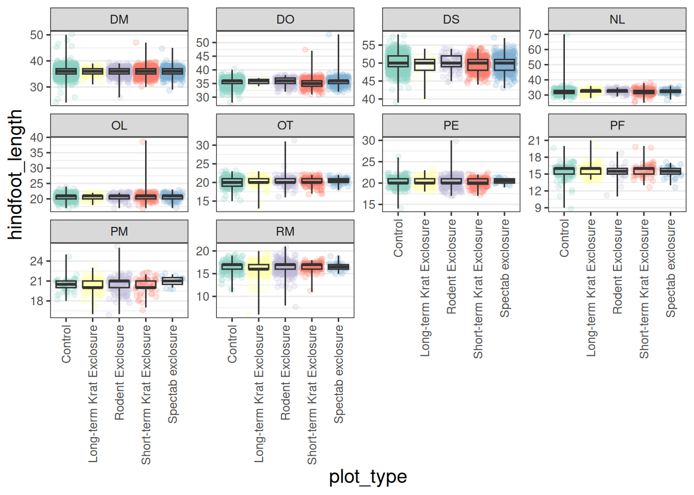
Create a new boxplot figure that lumps all plot_types together but has separate boxplots for each species
ggplot(data = species_400_data, mapping = aes(x = species_id, y = hindfoot_length, color = species_id)) +
geom_jitter(alpha = 0.2) +
geom_boxplot(coef = NULL, col = "black", alpha = 0.2) +
theme(axis.title = element_text(size = 14),
panel.grid.major.x = element_blank(),
legend.position = "none")Warning: Removed 1656 rows containing non-finite outside the scale range
(`stat_boxplot()`).Warning: Removed 1656 rows containing missing values or values outside the scale range
(`geom_point()`).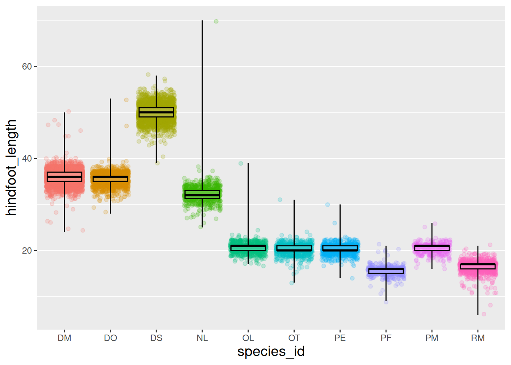
Subset the Dipodomys species and remove the species identified only to genus. Then, remove the species with unassigned sex and create species name by pasting togther genus and species.
Dipodomys <- complete_old %>%
dplyr::filter(genus == "Dipodomys") %>%
dplyr::filter(species != "sp.") %>% # Remove the unidentified individuals
dplyr::filter(sex != "") %>%
mutate(species_name = paste(genus, species, sep = " "))
with(Dipodomys, table(species_name))species_name
Dipodomys merriami Dipodomys ordii Dipodomys spectabilis
5630 1482 2367 unique(Dipodomys$sex)[1] "F" "M"Create boxplots of weight
ggplot(data = Dipodomys, mapping = aes(x = plot_type, y = hindfoot_length)) +
geom_jitter(aes(color = plot_type), alpha = 0.2) +
geom_boxplot(fill = NA) +
facet_wrap(~species_name, nrow = 1) +
theme(axis.text.x = element_text(angle = 90, vjust = 0.5, hjust = 1)) +
theme(axis.title = element_text(size = 14),
panel.grid.major.x = element_blank(),
legend.position = "none")Warning: Removed 936 rows containing non-finite outside the scale range
(`stat_boxplot()`).Warning: Removed 936 rows containing missing values or values outside the scale range
(`geom_point()`).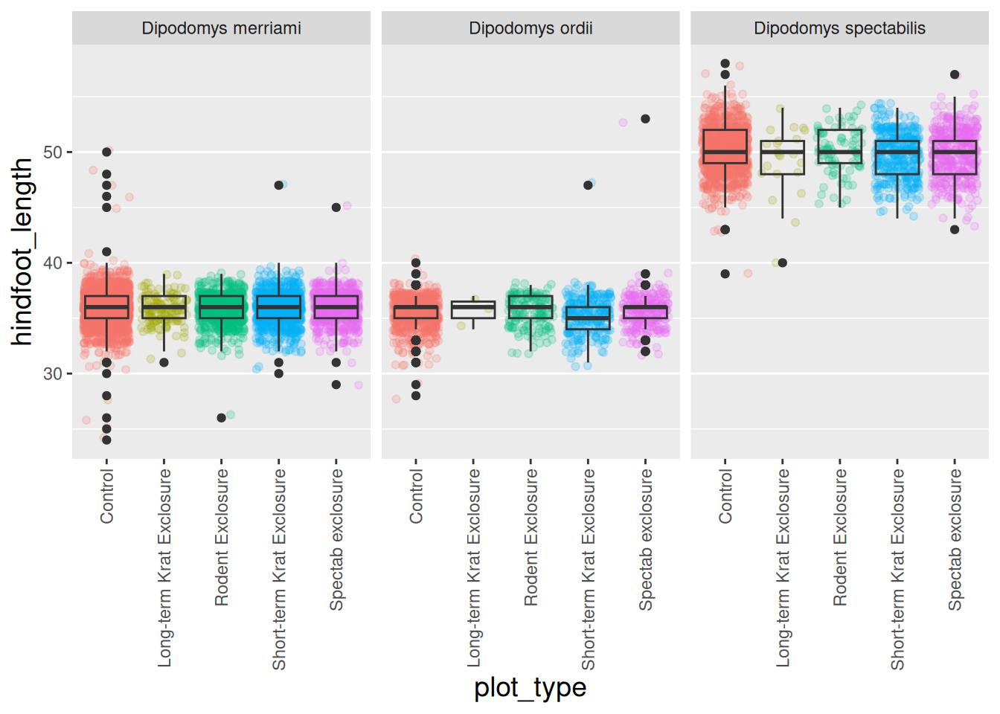
Now transpose the data so that hindfoot_length and weight are in the same column, identified by a new column called “variable”.
Dipodomys_long <- Dipodomys %>%
pivot_longer(cols = c(hindfoot_length, weight),
names_to = "variable",
values_to = "value")
ggplot(data = Dipodomys_long, mapping = aes(x = plot_type, y = value)) +
geom_jitter(aes(color = plot_type), alpha = 0.2) +
geom_boxplot(fill = NA) +
facet_grid(variable ~ species_name) +
theme(axis.text.x = element_text(angle = 90, vjust = 0.5, hjust = 1)) +
theme(axis.title = element_text(size = 14),
panel.grid.major.x = element_blank(),
legend.position = "none")Warning: Removed 1276 rows containing non-finite outside the scale range
(`stat_boxplot()`).Warning: Removed 1276 rows containing missing values or values outside the scale range
(`geom_point()`).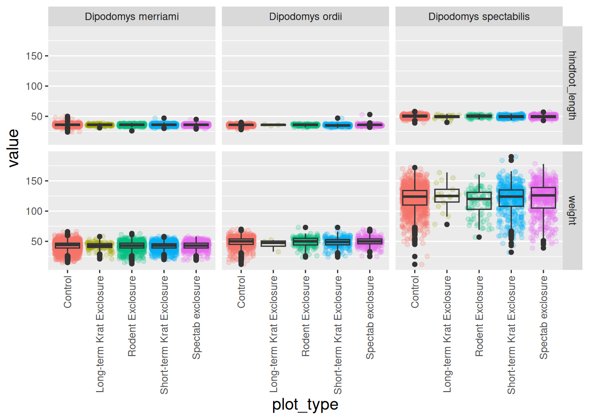
Allow for different y-axis scales
ggplot(data = Dipodomys_long, mapping = aes(x = plot_type, y = value)) +
theme_bw() +
geom_jitter(aes(color = plot_type), alpha = 0.2) +
geom_boxplot(fill = NA) +
facet_grid(variable ~ species_name, scales = "free_y") +
theme(axis.text.x = element_text(angle = 90, vjust = 0.5, hjust = 1)) +
theme(axis.title = element_text(size = 14),
panel.grid.major.x = element_blank(),
legend.position = "none")Warning: Removed 1276 rows containing non-finite outside the scale range
(`stat_boxplot()`).Warning: Removed 1276 rows containing missing values or values outside the scale range
(`geom_point()`).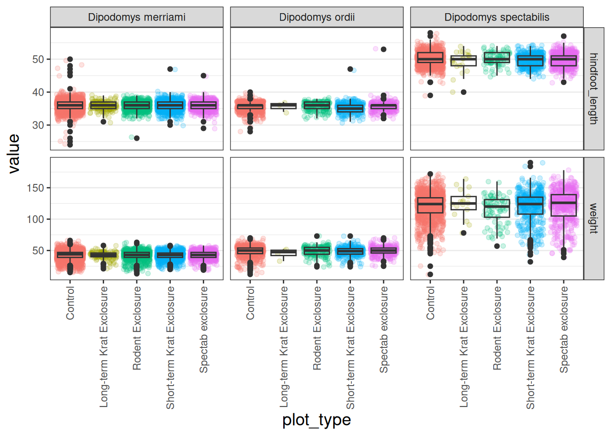
Work with Dipodomys spectabilis (Banner-tailed kangaroo rat)
banner_tailed <- Dipodomys %>%
dplyr::filter(species_name == "Dipodomys spectabilis")Look at the density of points across weight and hindfoot_length
ggplot(banner_tailed, aes(x=weight)) +
geom_density()Warning: Removed 128 rows containing non-finite outside the scale range
(`stat_density()`).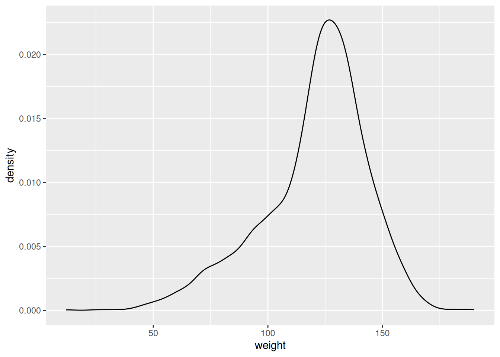
ggplot(banner_tailed, aes(x=hindfoot_length)) +
geom_density()Warning: Removed 326 rows containing non-finite outside the scale range
(`stat_density()`).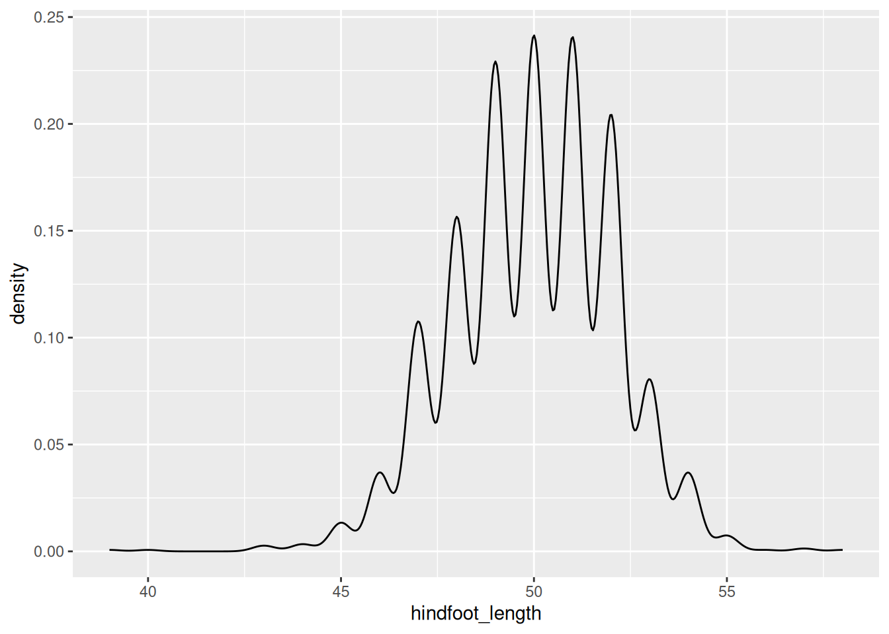
Weight is continuous but hindfoot_length is discrete
ggplot(banner_tailed, aes(x=hindfoot_length)) +
geom_bar(state = "count") +
scale_x_continuous(breaks = unique(banner_tailed$hindfoot_length))Warning in geom_bar(state = "count"): Ignoring unknown parameters: `state`Warning: Removed 326 rows containing non-finite outside the scale range
(`stat_count()`).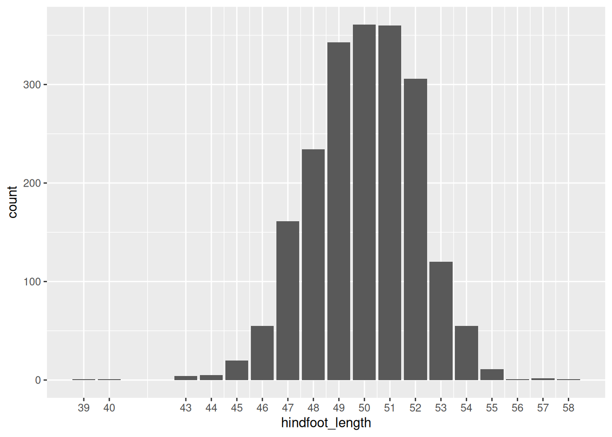
Use geom_density_2d to show the density
ggplot(banner_tailed , aes(x = weight, y = hindfoot_length)) +
geom_point() +
geom_density_2d()Warning: Removed 429 rows containing non-finite outside the scale range
(`stat_density2d()`).Warning: Removed 429 rows containing missing values or values outside the scale range
(`geom_point()`).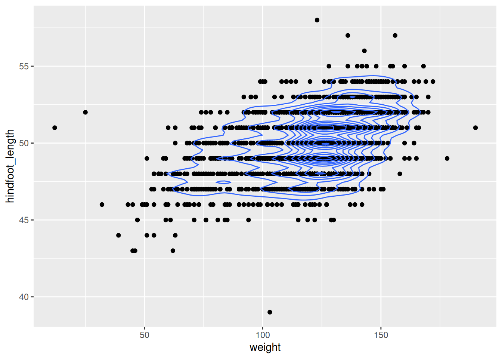
Fit LOESS regression line (default for geom_smooth)
ggplot(banner_tailed, aes(x = weight, y = hindfoot_length)) +
geom_point() +
geom_smooth()`geom_smooth()` using method = 'gam' and formula = 'y ~ s(x, bs = "cs")'Warning: Removed 429 rows containing non-finite outside the scale range
(`stat_smooth()`).Warning: Removed 429 rows containing missing values or values outside the scale range
(`geom_point()`).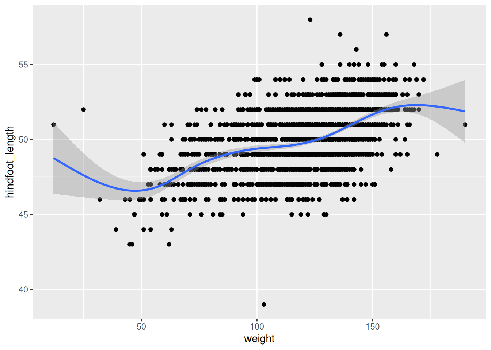
Linear regression
ggplot(banner_tailed, aes(x = weight, y = hindfoot_length)) +
geom_point() +
geom_smooth(method = "lm", se = FALSE)`geom_smooth()` using formula = 'y ~ x'Warning: Removed 429 rows containing non-finite outside the scale range
(`stat_smooth()`).Warning: Removed 429 rows containing missing values or values outside the scale range
(`geom_point()`).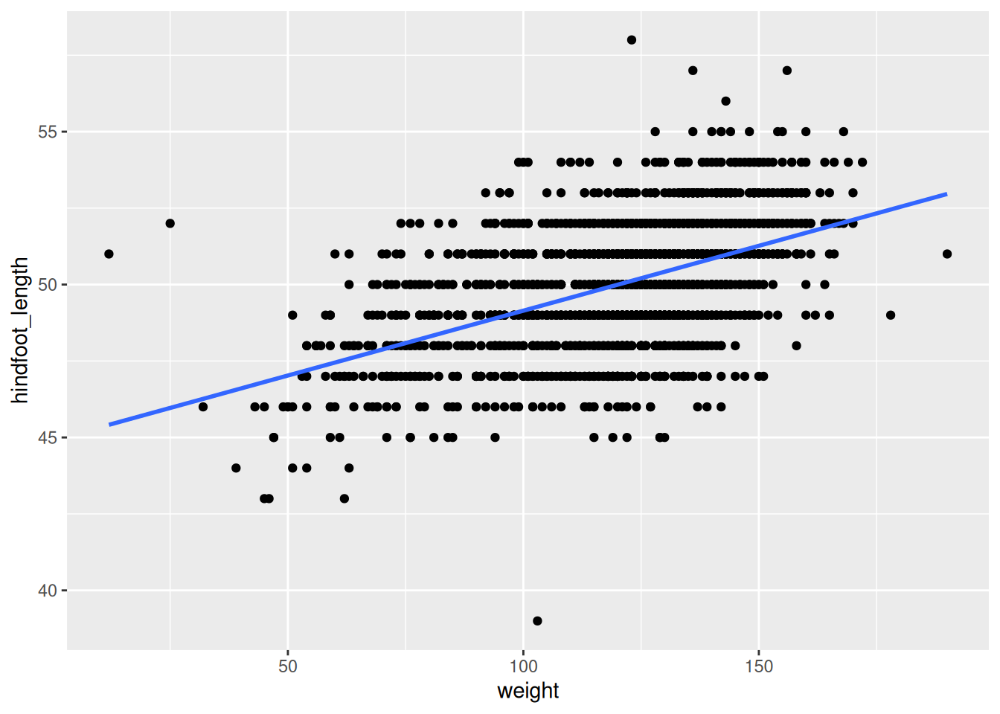
Polynomial regression
ggplot(banner_tailed, aes(x = weight, y = hindfoot_length)) +
geom_point() +
stat_smooth(method='lm', formula = y~poly(x,2))Warning: Removed 429 rows containing non-finite outside the scale range
(`stat_smooth()`).Warning: Removed 429 rows containing missing values or values outside the scale range
(`geom_point()`).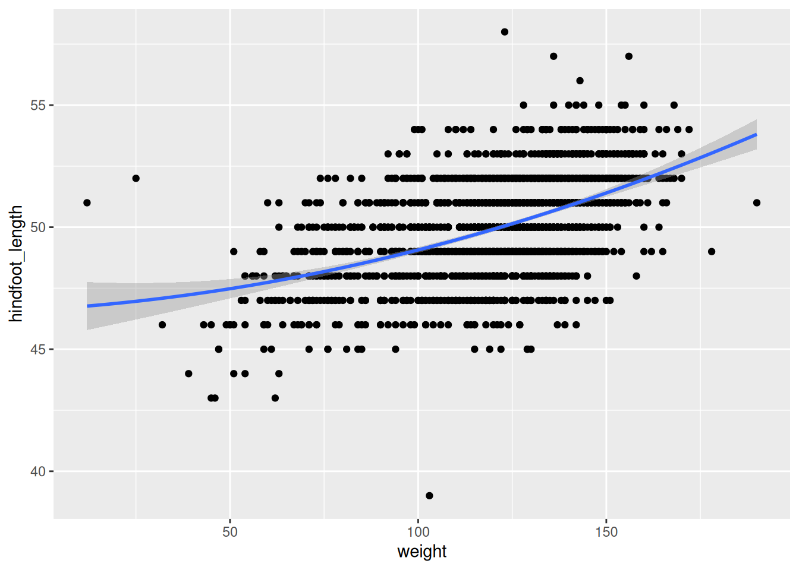
Linear regression with regression equation and summary statistics
ggplot(banner_tailed, aes(x = weight, y = hindfoot_length)) +
geom_point() +
geom_smooth(method = "lm", se = FALSE) +
stat_poly_eq(use_label(c("eq", "adj.R2", "f", "p", "n"))) `geom_smooth()` using formula = 'y ~ x'Warning: Removed 429 rows containing non-finite outside the scale range
(`stat_smooth()`).Warning: Removed 429 rows containing non-finite outside the scale range
(`stat_poly_eq()`).Warning: Removed 429 rows containing missing values or values outside the scale range
(`geom_point()`).These regression statistics are consistent with lm() regression function
lm(weight ~ hindfoot_length, data = banner_tailed) %>% summary()
Call:
lm(formula = weight ~ hindfoot_length, data = banner_tailed)
Residuals:
Min 1Q Median 3Q Max
-113.979 -10.516 3.094 14.094 64.021
Coefficients:
Estimate Std. Error t value Pr(>|t|)
(Intercept) -156.3933 11.3708 -13.75 <2e-16 ***
hindfoot_length 5.5367 0.2271 24.38 <2e-16 ***
---
Signif. codes: 0 '***' 0.001 '**' 0.01 '*' 0.05 '.' 0.1 ' ' 1
Residual standard error: 20.39 on 1936 degrees of freedom
(429 observations deleted due to missingness)
Multiple R-squared: 0.2348, Adjusted R-squared: 0.2344
F-statistic: 594.1 on 1 and 1936 DF, p-value: < 2.2e-16Use separate colors for sex
ggplot(banner_tailed, aes(x = weight, y = hindfoot_length, col = sex)) +
geom_point() +
geom_smooth(method = "lm", se = FALSE) +
stat_poly_eq(use_label(c("eq", "adj.R2", "f", "p", "n"))) `geom_smooth()` using formula = 'y ~ x'Warning: Removed 429 rows containing non-finite outside the scale range
(`stat_smooth()`).Warning: Removed 429 rows containing non-finite outside the scale range
(`stat_poly_eq()`).Warning: Removed 429 rows containing missing values or values outside the scale range
(`geom_point()`).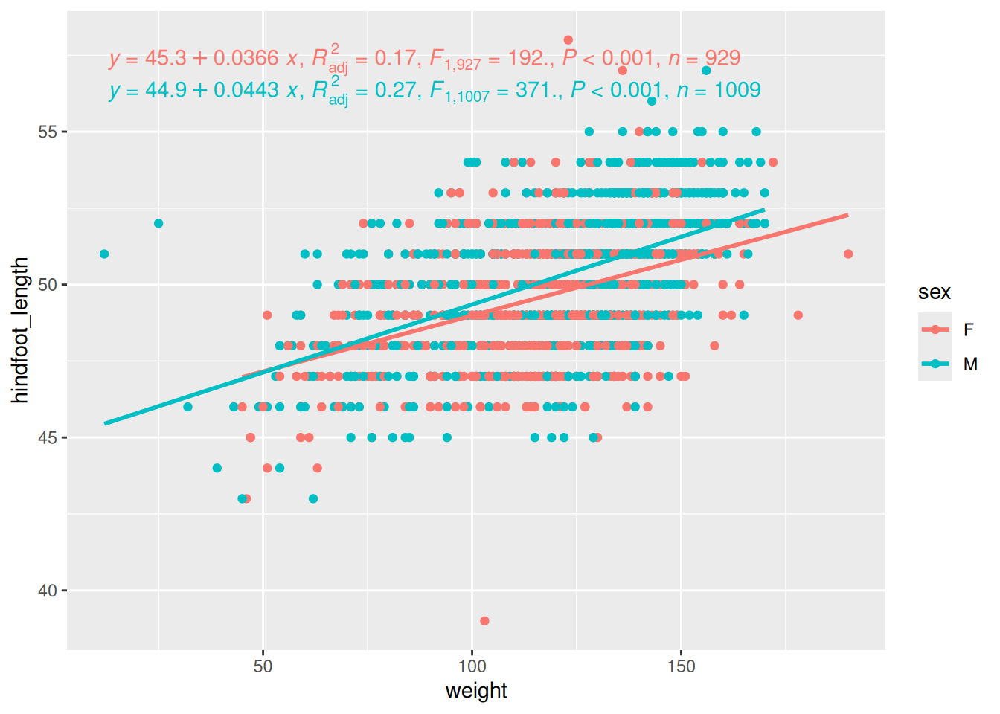
Is there evidence for different slopes between males and females?
lm(weight ~ hindfoot_length*sex, data = banner_tailed) %>% summary()
Call:
lm(formula = weight ~ hindfoot_length * sex, data = banner_tailed)
Residuals:
Min 1Q Median 3Q Max
-114.958 -10.503 2.902 13.972 65.883
Coefficients:
Estimate Std. Error t value Pr(>|t|)
(Intercept) -114.9518 17.4479 -6.588 5.72e-11 ***
hindfoot_length 4.6876 0.3513 13.344 < 2e-16 ***
sexM -67.6397 23.2678 -2.907 0.00369 **
hindfoot_length:sexM 1.3820 0.4654 2.969 0.00302 **
---
Signif. codes: 0 '***' 0.001 '**' 0.01 '*' 0.05 '.' 0.1 ' ' 1
Residual standard error: 20.34 on 1934 degrees of freedom
(429 observations deleted due to missingness)
Multiple R-squared: 0.2392, Adjusted R-squared: 0.238
F-statistic: 202.6 on 3 and 1934 DF, p-value: < 2.2e-16Use facet_grid to apply regression to all the species in the Dipodomys data.frame Allow for different y-axis scales
ggplot(Dipodomys, aes(x = weight, y = hindfoot_length)) +
geom_point(col = "black") +
geom_smooth(method = "lm", se = FALSE) +
stat_poly_eq(mapping = use_label("eq", "adj.R2")) +
# stat_poly_eq(x = 100, y = 60, mapping = use_label("adj.R2", "n")) +
facet_grid(sex ~ species_name, scales = "free") +
theme(legend.position = "none")`geom_smooth()` using formula = 'y ~ x'Warning: Removed 1215 rows containing non-finite outside the scale range
(`stat_smooth()`).Warning: Removed 1215 rows containing non-finite outside the scale range
(`stat_poly_eq()`).Warning: Removed 1215 rows containing missing values or values outside the scale range
(`geom_point()`).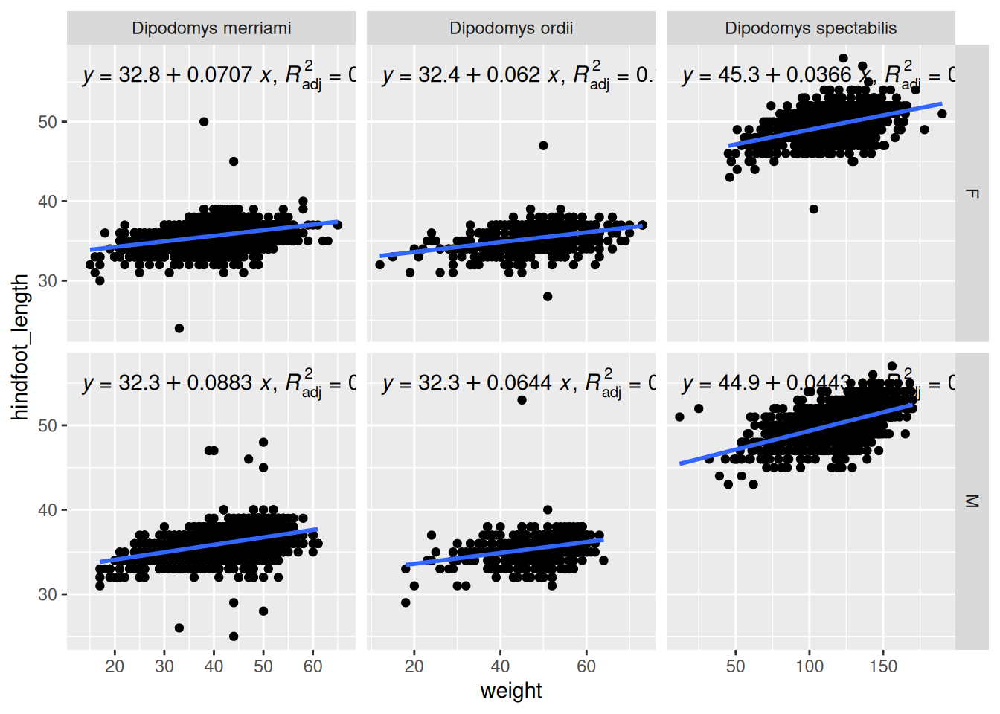